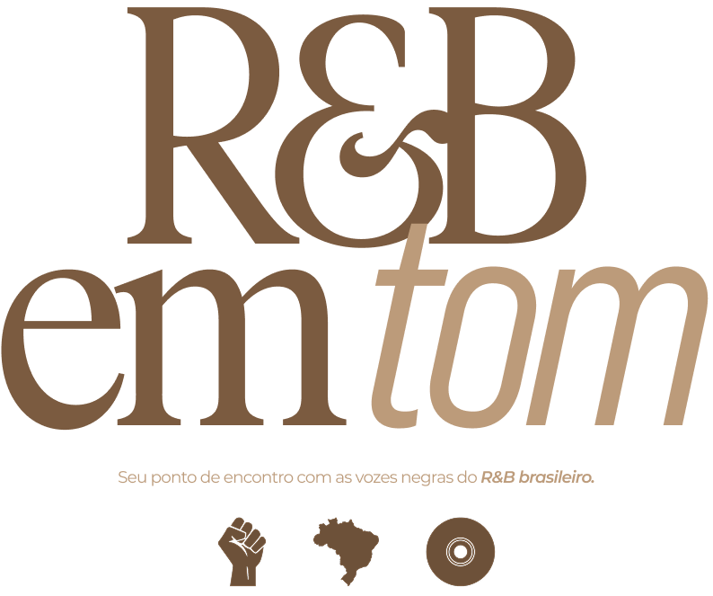

Um espaço dedicado a descobrir, conhecer e valorizar artistas negros que movimentam o R&B brasileiro.
Aqui, reunimos diferentes vozes, histórias e sonoridades que fazem parte da cena nacional, criando uma ponte entre quem faz música e quem quer descobrir novos artistas.
Mais do que um compilado, esta página é um convite para ouvir, explorar e reconhecer a força do R&B produzido no Brasil.
Dê play. Descubra novos nomes. Valorize a cena.